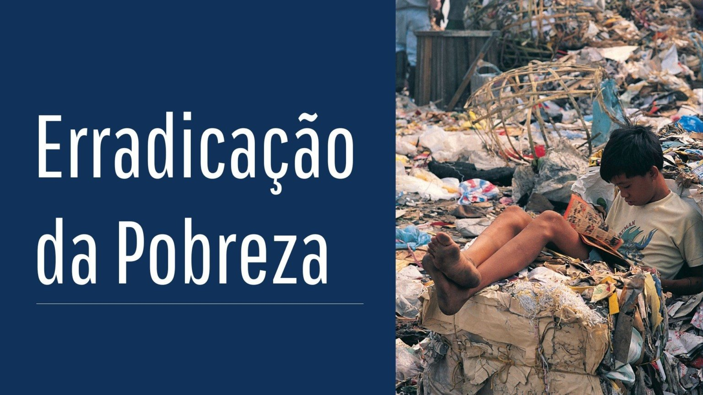
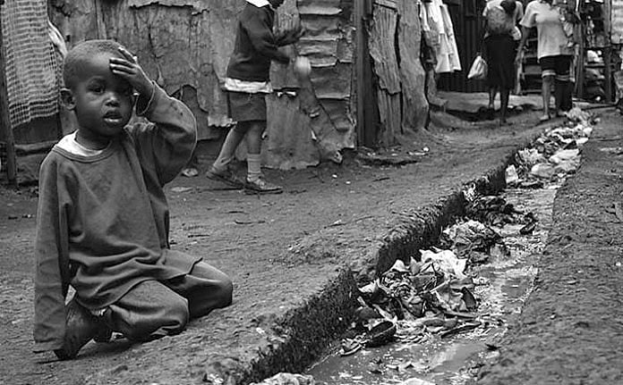
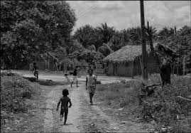
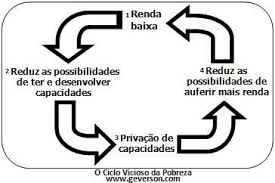
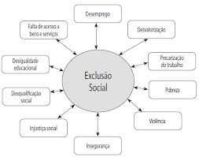

A pobreza é a condição em que uma pessoa ou comunidade não possui os recursos financeiros suficientes para satisfazer as necessidades básicas da vida: alimentação, moradia, saúde, educação e acesso à água potável.
Ela pode ser absoluta — quando há falta total de recursos — ou relativa, que considera o padrão de vida da sociedade em que o indivíduo está inserido. A pobreza impacta diretamente na qualidade de vida e nas oportunidades de desenvolvimento das pessoas.
A pobreza tende a se perpetuar de geração em geração. Crianças nascidas em famílias pobres geralmente enfrentam maiores dificuldades para acessar educação de qualidade, nutrição adequada e oportunidades de crescimento.
Isso cria um ciclo vicioso: sem acesso a uma boa educação, essas crianças têm menos chances de conseguir bons empregos no futuro, o que perpetua a situação de pobreza em suas vidas adultas.


Erradicar a pobreza é fundamental para garantir dignidade humana, justiça social e desenvolvimento sustentável. É o primeiro dos 17 Objetivos de Desenvolvimento Sustentável (ODS) da ONU.
A pobreza está diretamente ligada a outros problemas sociais, como desnutrição, analfabetismo, violência, desemprego e exclusão social. Ao combatermos a pobreza, estamos criando as bases para uma sociedade mais justa, saudável e produtiva.


A pobreza não afeta apenas quem vive nela. Ela impacta toda a sociedade ao aumentar a desigualdade, gerar instabilidade social e limitar o crescimento econômico de um país.
Regiões com altos índices de pobreza costumam apresentar maiores taxas de criminalidade, menor expectativa de vida e mais problemas de saúde pública. Erradicar a pobreza é, portanto, uma ação estratégica para o progresso coletivo.
A Organização das Nações Unidas (ONU) estabeleceu a erradicação da pobreza como o primeiro ODS. Governos do mundo inteiro têm a responsabilidade de implementar políticas públicas eficientes que visem a inclusão social, geração de empregos, acesso à saúde e educação para todos.
Além disso, o apoio da comunidade internacional, ONGs e sociedade civil é essencial para garantir que essas metas sejam alcançadas de forma global e sustentável.
Países como a China e o Vietnã conseguiram retirar milhões de pessoas da pobreza extrema através de políticas públicas focadas em educação, capacitação profissional, incentivo à economia local e reforma agrária.
No Brasil, programas como o Bolsa Família contribuíram para a redução da extrema pobreza e a melhoria dos indicadores sociais em muitas regiões. Ainda há muito a ser feito, mas os resultados mostram que é possível avançar com políticas bem planejadas.
A tecnologia também tem sido uma aliada no combate à pobreza. Aplicativos que conectam trabalhadores informais a oportunidades, fintechs que facilitam o acesso ao crédito e plataformas de ensino online gratuito são exemplos de como a inovação pode gerar inclusão social e econômica.
Além disso, a coleta e análise de dados tem ajudado governos e organizações a mapear regiões mais vulneráveis e direcionar melhor os recursos disponíveis.
Cada pessoa pode contribuir de alguma forma para a erradicação da pobreza. Algumas ações possíveis incluem:
A pobreza não é apenas a falta de dinheiro, mas a ausência de dignidade e oportunidades. Erradicá-la é um compromisso coletivo, que exige ação, empatia e responsabilidade de todos nós.
Pequenas atitudes, quando somadas, podem transformar vidas e comunidades inteiras. A mudança começa com a informação, a consciência e o engajamento.
Vamos juntos construir um mundo mais justo, onde todos tenham as mesmas oportunidades de viver com dignidade e esperança.